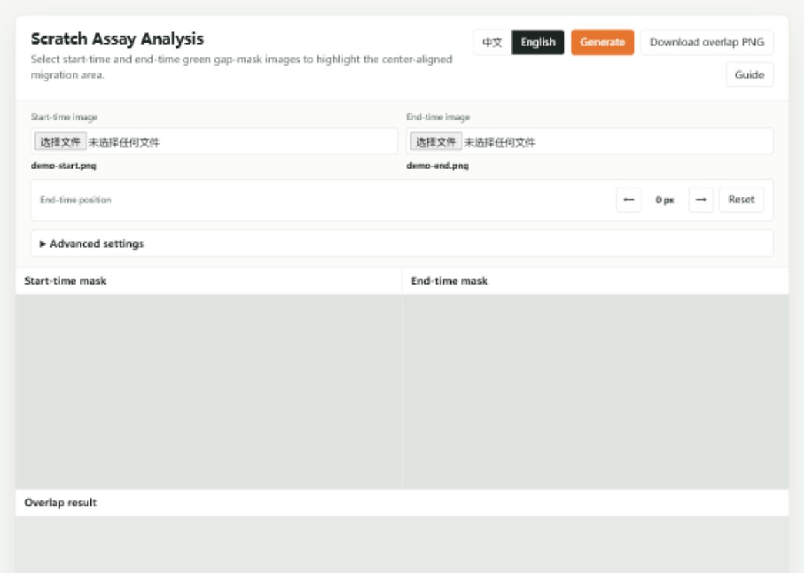
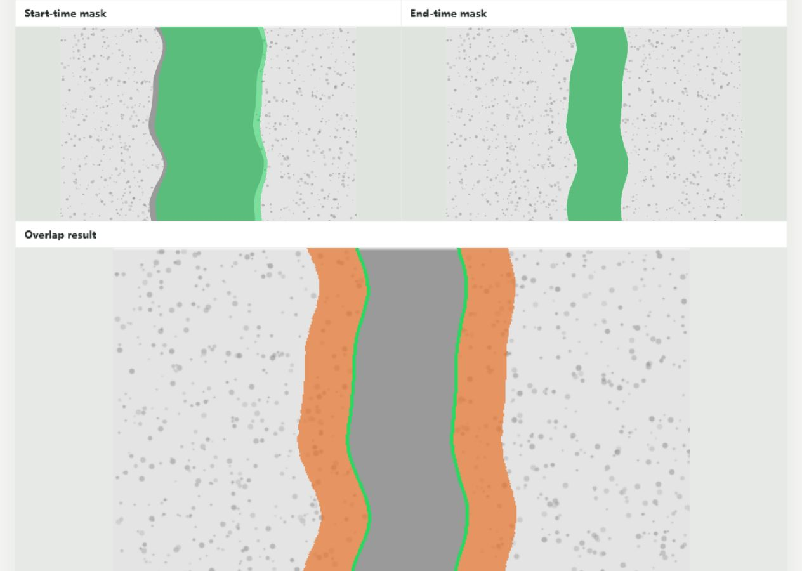

Scratch Assay Visualizer 使用教程
这个网页用于配合 SWEET 等工具输出的绿色划痕蒙版。你只需要导入开始时间和结束时间两张处理后的绿色蒙版，就可以生成面积变化可视化图。
一句话流程
第 1 步：先在 SWEET 中处理图片
在 SWEET 中完成划痕区域识别后，导出带绿色 gap mask 的图片。建议每个视野保存两张：一张是开始时间，一张是结束时间。两张图应来自同一个视野、同一倍率、同一裁剪范围。
- 推荐格式：PNG、JPG 或 WebP。
- 如果 SWEET 或显微镜软件导出的是 TIF，请先另存为 PNG。
- 绿色区域应覆盖划痕空白区域，也就是 gap。
- 文件名建议写清楚条件、重复编号和时间，例如
Control_rep1_start.png、Control_rep1_end.png。
第 2 步：导入两张绿色蒙版
打开分析网页后，点击 Start-time image 选择开始时间图片，点击 End-time image 选择结束时间图片。选好两张图以后，按钮会变成可点击状态。

第 3 步：生成 overlap 面积变化图
点击 Generate 后，网页会自动把开始时间和结束时间的 gap 居中配准，再计算 开始时间 gap - 结束时间 gap。生成结果中，橙色区域就是 gap 减少的部分，可以理解为本视野内的迁移面积变化。

怎么看结果
开始时间 gap 中已经被细胞填上的部分，即迁移面积变化。
结束时间剩余 gap 的边界，用来确认最终划痕边缘是否合理。
橙色面积占开始时间 gap 的比例，用于快速比较不同处理组。
橙色区域在左侧和右侧的分布。若明显只偏一边，先检查图片是否同视野。
什么时候需要左右微调
正常情况下不用调。如果结果图里橙色几乎只出现在一侧，而你确认实验中两边都有迁移，可以用 End-time position 的左右箭头微调结束时间位置。每点一次移动 2 px，网页会自动重新生成结果。
微调的目标不是让左右面积完全相等，而是让绿色边界和显微图中的结束时间 gap 边缘更合理。如果怎么调都不合理，通常说明两张图片不是同一个视野，或 SWEET 输出的绿色蒙版质量需要重新检查。
第 4 步：下载结果图
结果满意后，点击 Download overlap PNG。下载的 PNG 只包含下方 overlap 面积变化图，可以直接放入 PPT、论文草图或实验记录。
常见问题
为什么按钮不能点？
通常是还没有同时选择开始时间和结束时间两张图片。
为什么提示没有检测到绿色 mask？
请检查 SWEET 导出的 gap 是否为明显绿色。如果颜色很浅，可以展开 Advanced settings，稍微降低 Green threshold。
可以直接导入原始显微图吗？
不建议。本工具假设输入已经带有绿色 gap mask。原始显微图应先在 SWEET 中完成划痕区域识别。
橙色区域是否就是最终统计值？
橙色区域是可视化的迁移面积变化。定量比较时优先记录网页下方的 Migration ratio，并保持所有条件使用同一套处理流程。
快速体验演示数据
如果第一次使用，可以先打开演示数据看看效果。演示图只是教学用的模拟图片，不代表真实实验。
打开演示数据